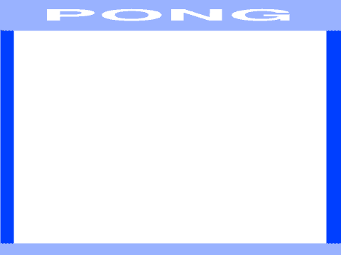

Pong er et av de aller første dataspillene som ble laget, og det
første dataspillet som ble en kommersiell suksess. Selve spillet er en
forenklet variant av tennis hvor to spillere slår en ball frem og
tilbake. Hvis en av spillerne ikke klarer å returnere ballen får den
andre spilleren poeng.
Oversikt over prosjektet
Mesteparten av kodingen av Pong skal du gjøre på egen hånd. Men vi
vil gi litt tips underveis. Spesielt vil vi se litt på hvordan vi
kontrollerer en ballfigur mens den spretter rundt på skjermen. I
resten av leksjonen vil du finne følgende:
Plan
Hvordan lage en sprettende ball-figur
Litt mer kontroll på hvordan ballen spretter
Racketer som spillerne kan styre
Poeng, lyder og slikt
Steg 1: En sprettende ball
Når man lager nye programmer og spill er det alltid lurt å begynne
med en enkel versjon som gjør litt av det det ferdige programmet skal
gjøre. Da kan du begynne og teste at programmet virker som det skal
nesten med en gang.
I vår enkle versjon skal vi bare få en ball til å sprette over
skjermen. Ingen spillere, ingen poeng, ingenting annet enn en
sprettende ball!
Sjekkliste
Start et nytt prosjekt. Slett kattefiguren.
Lag en ny ball-figur. Du kan enten finne en i biblioteket, eller
tegne en selv.
Vi vil ha muligheten til senere enkelt å endre hastigheten til
ballen. Lag derfor en ny variabel hastighet som
gjelder for ball-figuren.
Vår enkle kode for en sprettende ball består essensielt av to deler:
Den første delen passer på at ballen starter riktig (riktig
hastighet, riktig sted, riktig retning), mens den andre delen er
løkken som gjør at ballen beveger seg og snur når den treffer kanten
av skjermen.
når jeg mottar [Ny ball v]
sett [hastighet v] til [7]
gå til x: (0) y: (0)
pek i retning (tilfeldig tall fra (1) til (360))
for alltid
gå (hastighet) steg
sprett tilbake ved kanten
slutt
Les koden nøye mens du legger den til på ball-figuren. Pass på at
du skjønner hva hver enkelt kloss gjør, fordi denne koden skal du
endre selv etterhvert.
Klikk på kodeblokken din for at den skal kjøre, og for at ballen
skal begynne å bevege seg. Ser det bra ut?
En bedre måte å starte programmet på
Vi har laget meldingen Ny ball siden vi tenker at i selve spillet
vil vi at ballen begynner fra midten av skjermen etter hver gang en
spiller har gjort poeng. I denne enkle versjonen kan vi sende
meldingen Ny ball hver gang det grønne flagget klikkes, for å
enklere starte spillet.
Legg denne enkle kodesnutten til på scenen:
når grønt flagg klikkes
send melding [Ny ball v]
Steg 2: Litt mer kontroll på ballen
Klossen sprett tilbake ved kanten er veldig enkel å
bruke, men dessverre gir den oss ikke så mye kontroll. For eksempel
kan vi ikke bruke den om vi vil at ballen skal sprette andre steder
enn ved kanten (for eksempel i en racket). Den er også vanskelig å
bruke om vi vil at andre ting skal skje når ballen spretter, kanskje
vi vil spille en lyd, endring på hastigheten eller endre litt i
retningen.
Vi vil bruke sansning-klosser for å bedre
kontrollere hvordan ballen spretter. Da kan vi oppdage når ballen
berører andre figurer (som for eksempel racketene til spillerene),
eller når den berører spesielle farger.
Sjekkliste
Legg til din egen bakgrunn hvor du bruker forskjellige farger der du
vil at ballen skal sprette (vi har brukt lyseblått) og der du vil gi
poeng (vi har brukt mørkeblått).

Om ballen treffer mål (mørkeblå) vil vi at den stopper, og
etterhvert skal vi telle poeng. Dette kan vi gjøre ved å bytte ut
for alltid
slutt
med
gjenta til <berører fargen [#0000FF]>
slutt
send melding [Poeng v]
For at ballen skal sprette når den treffer veggen (lyseblå) vil vi
endre retningen på ballen selv. Igjen undersøker vi om ballen
berører en spesiell farge ved å bytte ut
sprett tilbake ved kanten
med for eksempel
hvis <berører fargen [#9999FF]>
pek i retning ((180) - (retning))
trommeslag (15 v) som varer (0.01) takter
slutt
Skjønner du hva tallet 180 gjør? Prøv å tenk på hvordan en ball
spretter i en vegg, og hvordan retningen på ballen endrer seg.
Steg 3: Racketer til spillerene
Nå som ballen spretter fint kan vi lage racketene som spillerene skal
styre. Disse vil være veldig like hverandre, slik at vi kan først
lage den ene racketen og deretter kopiere denne.
Sjekkliste
Tegn en ny figur. Lag for eksempel et rektangel som kan fungere som racket.
Skriv kode som starter på meldingen Ny ball. På samme måte som for
ballen skal denne bestå av to deler: Først må koden passe på at
racketen starter på riktig sted. Deretter går koden inn i en løkke
hvor racketen flyttes opp og ned (endre y) når for
eksempel tastene W og S trykkes.
Test at du kan flytte racketen. Du vil kanskje også legge inn en
begrensning slik at ikke racketen kan forsvinne ut av skjermen? Det
kan du gjøre for eksempel med en test som ser omtrent slik ut:
hvis <<tast [w v] trykket> og <(y-posisjon) < [150]>>
slutt
Når du er fornøyd med hvordan denne racketen styres kan du kopiere
den.
Endre litt på den nye racket-figuren. Du kan for eksempel endre
fargen på den om du vil? Du må også endre litt i koden, slik at den
starter på andre siden av skjermen og slik at den reagerer på andre
taster, for eksempel pil opp og pil ned.
Til slutt må vi legge til kode på ball-figuren slik at ballen
spretter når den berører en racket. Dette kan gjøres veldig likt
hvordan vi fikk ballen til å sprette på veggen. Du må bare bruke
berører farge i stedet for
berører.
Siden ballen nå treffer en vertikal racket i stedet for en
horisontal vegg må vi også bytte ut tallet 180 i pek i retning-klossen. Hvilket tall kan du bruke? Prøv deg
fram, eller tenk gjennom hvordan en ball spretter når den treffer en
vegg.
Sjekk at spillet nå fungerer! Ballen spretter fram og tilbake mellom
de to racketene. For å slippe å stadig starte spillet på nytt kan du
lage litt enkel kode for ballen når den mottar meldingen Poeng. La
denne koden spille en passende poeng-lyd til den er ferdig. Deretter
kan den sende meldingen Ny ball igjen.
Du vil kanskje oppleve at racketene beveger seg raskere og raskere
for hver ny ball? Dette skjer fordi hver gang meldingen Ny ball
blir sendt startes en ny løkke som flytter racketene. For å fikse
dette kan du stoppe andre skript i figuren for de to
racketene når meldingen Poeng mottas.
Steg 4: Videreutvikling av spillet
Vi har nå laget en enkel versjon av et av de første dataspillene i
historien. Men det er mange muligheter for videreutvikling av
spillet.
Du står helt fritt i hvordan du vil jobbe videre med spillet ditt, men
her er noen ideer som kan gjøre spillet enda morsommere å spille:
Ideer til videreutvikling
Legg til en poeng-teller. Dette kan du gjøre for eksempel med to
variabler, en for hver spiller. Når meldingen Poeng mottas kan du
sjekke x-posisjonen av ball-figuren for å finne ut hvem som skal
få poeng.
La hastigheten øke etterhvert som ballen går frem og tilbake. For
eksempel kan du la hastigheten øke hver gang ballen berører en av de
to racketene.
Det kan være et problem at ballen bare går opp og ned, og ikke
sidelengs (eller veldig sakte sidelengs) siden vi har satt
utgangsretningen til ballen helt tilfeldig. Kan du begrense hvilke
retninger ballen starter i slik at den alltid beveger seg noe
sidelengs?
I stedet for at ballen spretter perfekt på racketene kan du endre
retning litt tilfeldig, for eksempel ved å legge til et lite
tilfeldig tall (positivt eller negativt) etter at ballen har snudd i
racketen.
En morsommere, og mer naturlig, sprett på racketen kan du få ved å
ta hensyn til hvor på racketen ballen treffer. Dette kan du gjøre
for eksempel ved å sammenligne y-posisjonen til ballen og
racketen.
Hva om man kan flytte racketene sidelengs også? Ikke bare opp og
ned? Det kan være lurt å begrense hvor langt racketene kan bevege
seg sidelengs, for eksempel kun over halve skjermen. Da vil spillet
ligne enda litt mer på tennis.
Kanskje du kan videreutvikle hele konseptet, slik at det er mulig å
plukke opp power-ups etterhvert som man spiller. For eksempel noe
som endrer hastigheten på racketen eller ballen, eller kanskje lager
litt skru på ballen. På nettet, for eksempel på
http://www.ponggame.org/ finnes
forskjellige Pong-varianter du kan hente inspirasjon fra.
Pong er morsomst når man er to spillere. Men av og til er man alene,
og da hadde det vært morsomt om man kunne spilt mot
datamaskinen. Klarer du å kode en av racketene slik at datamaskinen
kan styre den? Det er ikke så veldig vanskelig, du kan for eksempel
la datamaskinen flytte racketen sin opp eller ned ved å sammenligne
y-posisjonen til ballen med y-posisjonen til racketen til
datamaskinen.
Forbedre denne siden
Funnet en feil? Kunne noe vært bedre? Hvis ja, vennligst gi oss tilbakemelding ved å lage en sak på Github eller fiks feilen selv om du kan. Vi er takknemlige for enhver tilbakemelding!